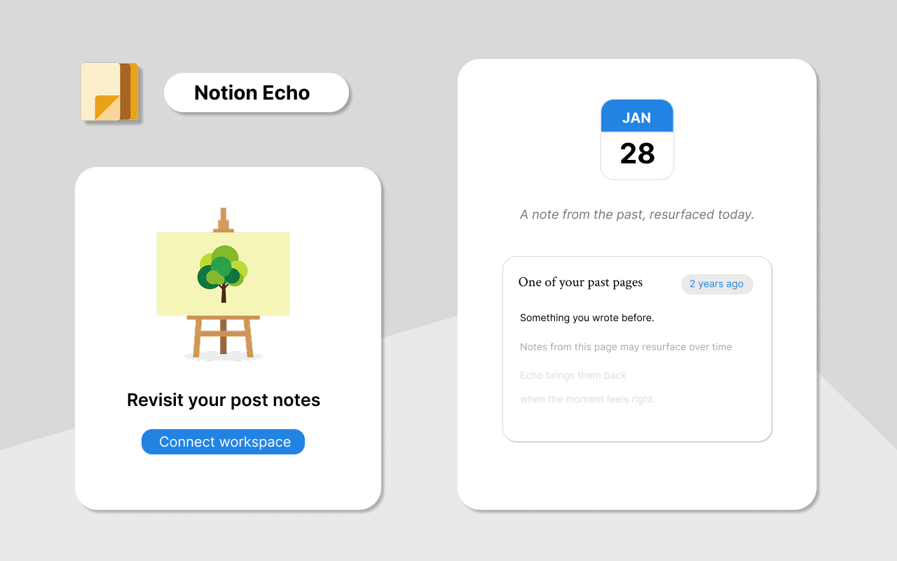

Notion Echo
Bubble up history notes in Notion
状态
Active
版本
v1.1.0
平台
Chrome
类型
Side Panel
版本
v1.0.0
2026 Jan
- Token验证与Pages选择
- Block回溯 + 当日缓存
v1.0.1
2026 Feb
- UI设计优化
- 图标重构
v1.1.0
TBD
- Database支持
- 性能优化


项目概述
自动检索你在Notion中1-3年前同月写下的内容。
把已经写过、但不再主动翻到的内容，自动送回眼前。
技术架构
核心功能
去年今日回溯
本地隐私存储
智能缓存机制
跳转Notion原文
问题与解决方案
核心问题
- Notion中的历史笔记几乎不会被主动翻阅
- 缺少"偶遇"过去想法的机制
解决方案
- 基于Block创建时间，自动匹配同月1-3年前的内容
- Side Panel形态，无需离开当前页面即可回顾
架构设计
- Service Worker处理Notion API通信与数据处理
- 通过chrome.runtime.sendMessage通信
- chrome.storage.local存储Token、配置与缓存
- 无后端服务器，所有数据仅存于浏览器本地